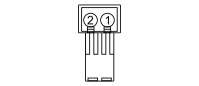

I100A REMOTE KEY FOR DISABLING ANTI-THEFT DEVICE (OPTIONAL DASHBOARD)
- Path
- Electrical equipment > 3 CONNECTORS > I SWITCHES > I100 REMOTE KEY FOR DISABLING ANTI-THEFT DEVICE > I100A REMOTE KEY FOR DISABLING ANTI-THEFT DEVICE (OPTIONAL DASHBOARD)
- Kind
- connector pinout (pin -> wire colour -> other end)
- Applies to
- all engines; all production periods
- Interactive page
- https://sloeber94.github.io/elrnDB-fDct/en/#/244003138
Applies to: all engines; all production periods

Wiring | Colour |
|---|---|
GRIGIO (grey) |
Pin | Cable | Destination | |||
|---|---|---|---|---|---|
Sec.. | Colour | Node | Connect. | Pin | |
2 | 0,5 | G (yellow) | A02 | ||